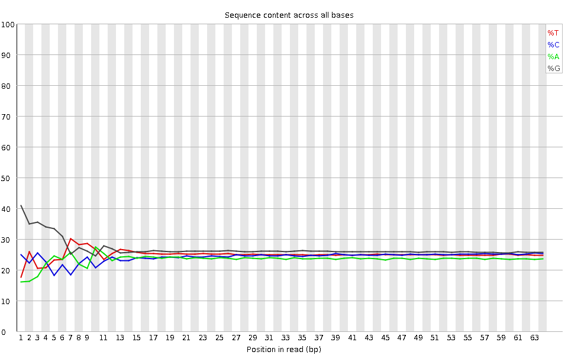
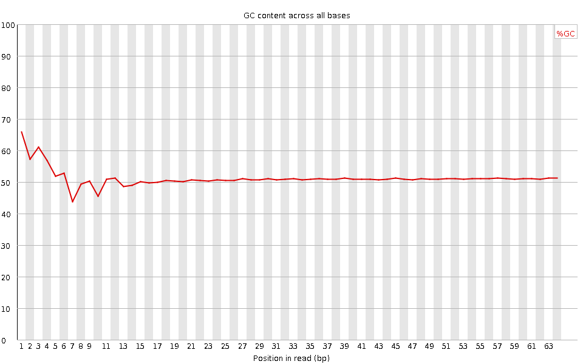
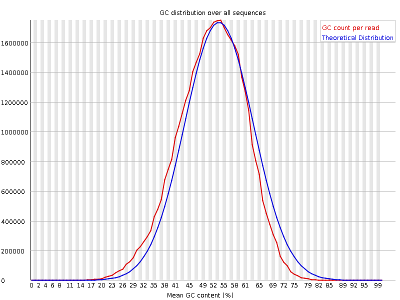
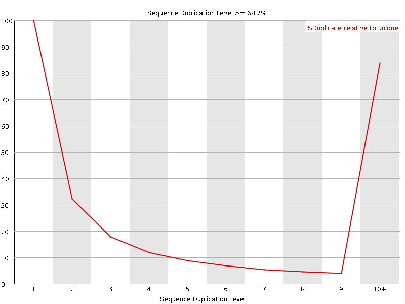
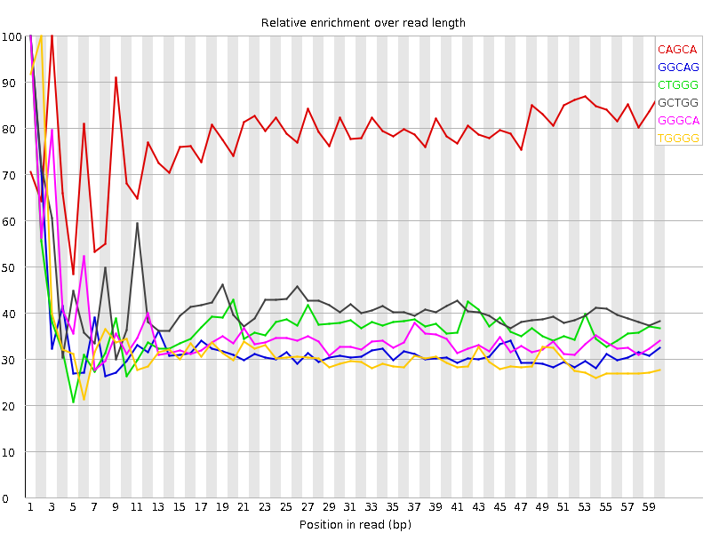

![[OK]](Icons/tick.png) Basic Statistics
Basic Statistics
| Measure | Value |
|---|---|
| Filename | SRR307932_pe_1.f.fastq |
| File type | Conventional base calls |
| Encoding | Sanger / Illumina 1.9 |
| Total Sequences | 27395605 |
| Filtered Sequences | 0 |
| Sequence length | 64 |
| %GC | 51 |
Per base sequence quality

Per sequence quality scores

![[FAIL]](Icons/error.png) Per base sequence content
Per base sequence content

Per base GC content

Per sequence GC content

Per base N content

Sequence Length Distribution

Sequence Duplication Levels

Overrepresented sequences
No overrepresented sequences
![[WARN]](Icons/warning.png) Kmer Content
Kmer Content

| Sequence | Count | Obs/Exp Overall | Obs/Exp Max | Max Obs/Exp Position |
|---|---|---|---|---|
| CAGCA | 4389110 | 3.000612 | 3.847373 | 3 |
| GGCAG | 4012495 | 2.1682572 | 6.617772 | 1 |
| CTGGG | 4210820 | 2.1357257 | 5.726992 | 1 |
| GCTGG | 4204515 | 2.1325278 | 5.0667706 | 1 |
| GGGCA | 3544395 | 1.915307 | 5.317789 | 1 |
| TGGGG | 3733740 | 1.7133728 | 5.3020973 | 2 |
| GGGAG | 3250755 | 1.5893134 | 5.1807404 | 1 |
| GGGGA | 3060605 | 1.496348 | 6.183683 | 1 |
| GTGGG | 3007255 | 1.3799968 | 6.376311 | 1 |
| GGGGG | 3163810 | 1.3513557 | 5.6537385 | 1 |
| GGGGT | 2913880 | 1.337148 | 5.359642 | 1 |
| TGTGT | 2356385 | 1.2481049 | 6.426743 | 2 |
| GTGTG | 2449870 | 1.207812 | 6.6072793 | 1 |
| TACAA | 1450700 | 1.1034547 | 8.13911 | 6 |
| GTACA | 1577270 | 1.0481344 | 7.380407 | 5 |
| TGTAC | 1503120 | 0.9375341 | 6.8125777 | 4 |
| CGGGG | 1829850 | 0.8638647 | 5.4960465 | 1 |
| GTGTA | 1487400 | 0.83936363 | 6.519543 | 3 |